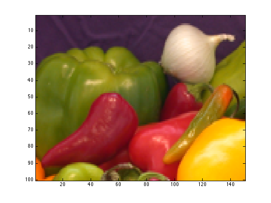
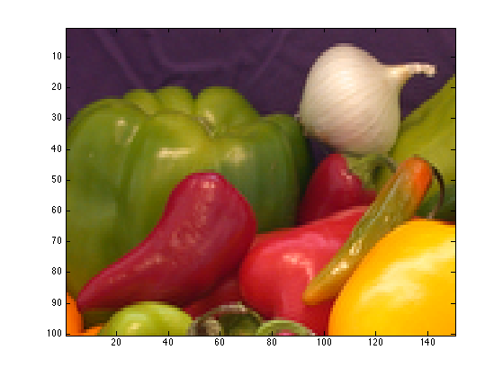
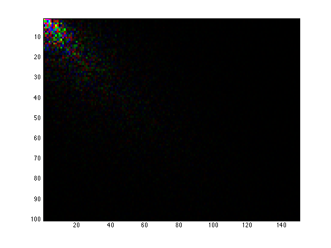
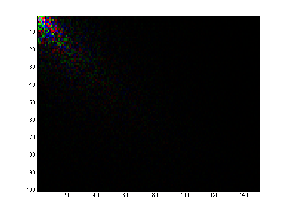
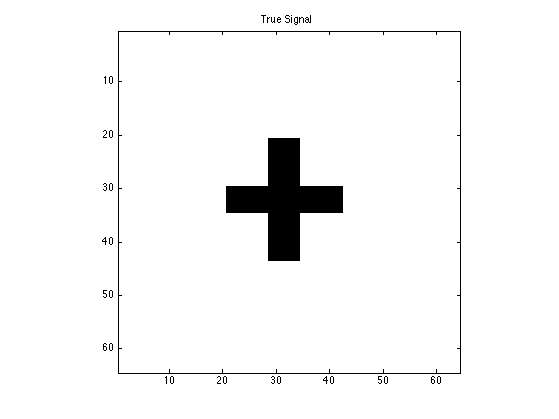
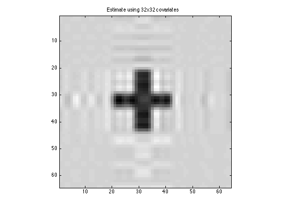

Contents
Downsize an array using different methods
clear; % load an RBG image: 135-by-198-by-3 array I = imread('onion.png'); display(size(I)); figure; imagesc(I);
ans = 135 198 3
Set target dimension
targetdim = round([100 150 3]); display(targetdim);
targetdim = 100 150 3
Downsize using interpolation
I_interp = array_resize(I, targetdim); %<-- default method is interpolate
display(size(I_interp));
figure; imagesc(I_interp);
ans = 100 150 3
Downsize using discrete cosine transform (DCT)
I_dct = array_resize(I, targetdim, 'method', 'dct'); display(size(I_dct)); figure; imagesc(I_dct);
ans = 100 150 3
Downsize to PCA scores using HOSVD. PC scores loose original interpretation
I_hosvd = array_resize(I, targetdim, 'method', 'hosvd'); display(size(I_hosvd)); figure; imagesc(I_hosvd);
ans = 100 150 3
Downsize to PCA scores using marginal SVD. PC scores loose original interpretation
I_2dsvd = array_resize(I, targetdim, 'method', '2dsvd'); display(size(I_2dsvd)); figure; imagesc(I_2dsvd);
ans = 100 150 3
Upsize an array using different methods
Set target dimension
targetdim = round([200 300 3]); display(targetdim);
targetdim = 200 300 3
Upsize using interpolation
I_interp = array_resize(I, targetdim); %<-- default method is interpolate
display(size(I_interp));
figure; imagesc(I_interp);
ans = 200 300 3
Upsize using discrete cosine transform (DCT)
I_dct = array_resize(I, targetdim, 'method', 'dct'); display(size(I_dct)); figure; imagesc(I_dct);
ans = 200 300 3
Downsizing-analysis-upsizing
clear; % reset random seed s = RandStream('mt19937ar','Seed',2); RandStream.setGlobalStream(s);
True coefficients for regular (non-array) covariates
p0 = 5; b0 = ones(p0,1);
2D true signal: 64-by-64 cross
shape = imread('cross.gif'); shape = array_resize(shape,[32,32]); % 32-by-32 b = zeros(2*size(shape)); b((size(b,1)/4):(size(b,1)/4)+size(shape,1)-1, ... (size(b,2)/4):(size(b,2)/4)+size(shape,2)-1) = shape; [p1,p2] = size(b); display(size(b)); figure; imagesc(-b); colormap(gray); title('True Signal'); axis equal; axis tight;
ans =
64 64
 Simulate covariates
n = 500; % sample size X = randn(n,p0); % n-by-p0 regular design matrix M = tensor(randn(p1,p2,n)); % p1-by-p2-by-n matrix variates display(size(M));
ans =
64 64 500
Simulate responses
mu = X*b0 + double(ttt(tensor(b), M, 1:2));
sigma = 1; % noise level
y = mu + sigma*randn(n,1);
Rank 2 Kruskal regression with 64-by-64 covariates
tic; [~,beta1,glmstats1] = kruskal_reg(X,M,y,2,'normal'); toc; display(size(beta1)); figure; imagesc(-double(beta1)); colormap(gray); title('Estimate using 64x64 covariates'); axis equal; axis tight;
Elapsed time is 4.197847 seconds.
ans =
64 64
Resize 2D covariates to 32-by-32
M_reduce = array_resize(double(M), [32 32 n], 'method', 'dct'); display(size(M_reduce));
ans =
32 32 500
Rank 2 Kruskal regression with 32-by-32 covariates
tic;
[~,beta2,glmstats2] = kruskal_reg(X,M_reduce,y,2,'normal');
toc;
display(size(beta2));
Elapsed time is 0.774076 seconds.
ans =
32 32
Resize estimate and display in original size
beta2 = array_resize(double(beta2), [64 64], 'method', 'dct'); display(size(beta2)); figure; imagesc(-double(beta2)); colormap(gray); title('Estimate using 32x32 covariates'); axis equal; axis tight;
ans =
64 64
